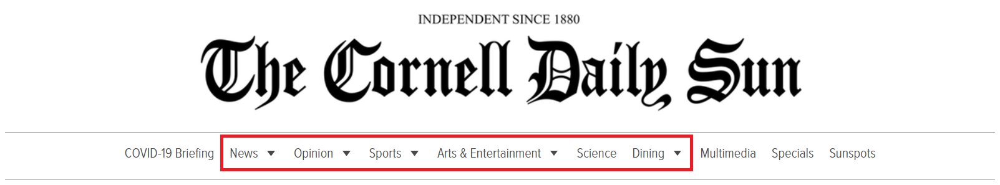

1
April 18, 2020
The Cornell Daily Sun is the student-run newspaper at Cornell that I'm ashamed to say
I have never read, except for on the rare occasion when someone writes something apparently so outrageous
that it ends up on the meme page (e.g.
this).
I have no idea what goes on in it, I couldn't really tell you what type of content gets published. All I know is there's somewhat debatable mental health opinions
and
good quesadilla recipes.
Being the CS major that I am, I decided to find out by crawling 9,700 articles from the Cornell Daily Sun website using Selenium + BeautifulSoup to analyze, instead of, well,
actually reading any of it (to be honest I had been finding an excuse to learn topic modeling + basic NLP and finally get around to setting up a blog during this coronavirus period,
but I think that makes for the better sentence).

This is the header for the Daily Sun's website - we'll be looking at the 6 categories demarcated in red, since content in the others are harder to come by. The COVID-19 Briefing section
also got added after I started work for this, so unfortunately there's nothing on that. These articles range from February 2016 to March 2020. Let's see what's going on in this newspaper.
For starters, here's the publication for that entire time period, each point representing the total for an entire week. Peaks in the graph correspond to particular events, for example,
the 2016 election, the assault in Collegetown in
September 2017,
and most recently COVID-19 causing classes to first go online and later be
postponed.
The seasonal breaks in publication for each year are also visible, with activity significantly reduced during academic breaks - winter, spring, summer, fall, and thanksgiving, in that order.
Now, looking at the topics (kind of the whole point of my doing all this), first focusing on the News section only. The categorization into topics is done roughly, with topic modeling via LDA (Latent Dirichlet Allocation)
and an additional step of post-processing with partial labeling and linear classification. LDA is a technique that performs a "soft" grouping of documents into different topics based on the words used in them,
assigning probability scores for each topic and each document - representing the probability that the document belongs in that topic. For example, a news article with repeated mentions of the words "state", "trump", and "economy"
will likely be assigned a high score for the topic "U.S. & World Politics", while an article mentioning "food", "campus", "business", and "collegetown" will likely end up in the category "Ithaca Campus", and so on.
What it practically means is I don't have to manually label 3,900 news articles on my own. It's not my summer internship anymore.
Good starting points for learning about LDA are
here,
here, and
here.
Just make sure you don't mistakenly look up Linear Discriminant Analysis instead - I spent 15 minutes reading Ch 4.3 of
The Elements of Statistical Learning before realizing it had nothing to do with NLP.
1. The initial LDA topics were generated using gensim's wrapper for
Dynamic Topic Models
(which have a really clean formulation for dealing with the time dimension) -
gensim.wrappers.dtmmodel.
This allows for LDA's topic-word and document-topic distributions to change over time, which suits the modeling of news articles.
The number of topics n_topics is selected via grid-search optimizing for
topic coherence,
selecting the lowest value of n_topics (10) before the score starts to flatten out.
2. With the initial LDA outputs, the initial topics were re-assigned into 8 new topics, and manual labeling was done for around 250 articles.
A simple logistic regression
model was trained using the LDA probability vectors as X, and the manual labels as Y. The model was then used
for generating predictions for the entire set of articles.
3. t-SNE
was used to generate the datapoints for visualization, using the LDA probability vectors instead of the logistic regression softmax vectors
(for aesthetic reasons - this creates an appearance of skewness in each cluster). To magnify this skewness and make the plots look a tiny bit less like
a typical last-layer feature t-SNE visualization, each input vector was also moved closer to its cluster centroid before running t-SNE.